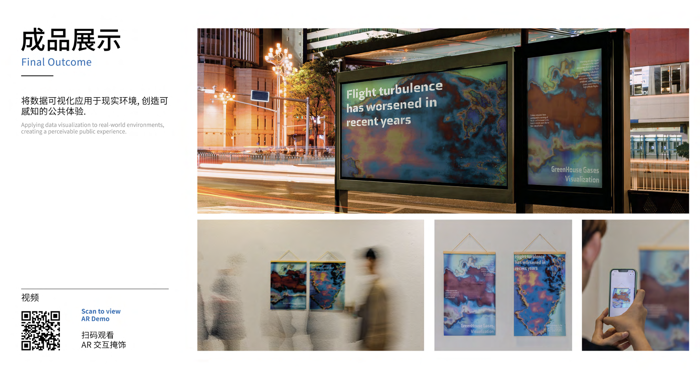

Selected Achievements
HiiBrand Design Work
My design work was selected as a finalist in HiiBrand. This experience allowed me to present my visual design work in a professional design competition.

HALO WeChat Mini Program
Designed and developed HALO, a food recording and health management WeChat Mini Program. The application successfully passed WeChat review and ICP filing and was officially released.